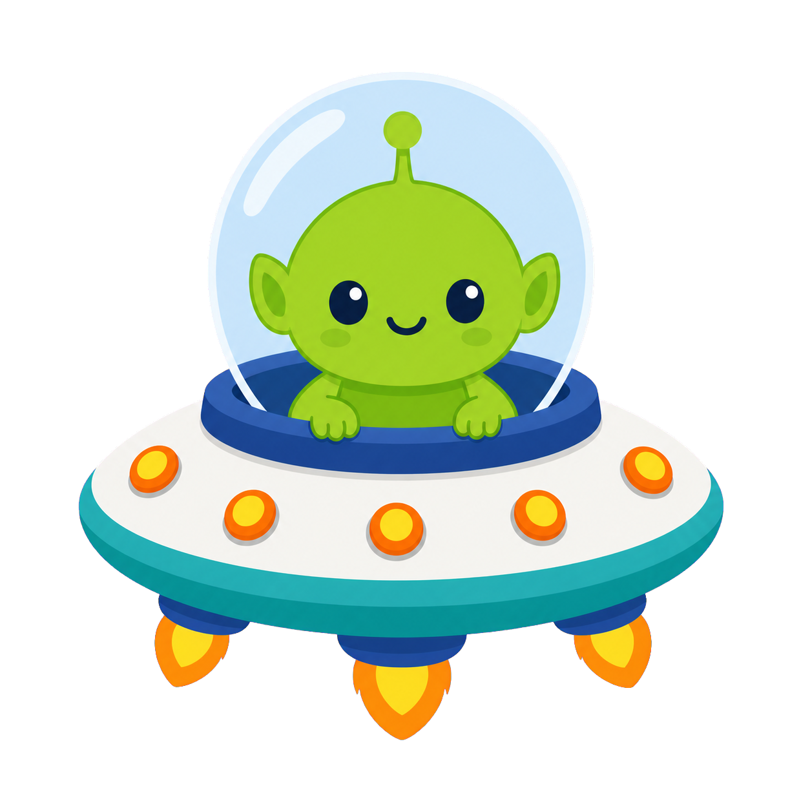
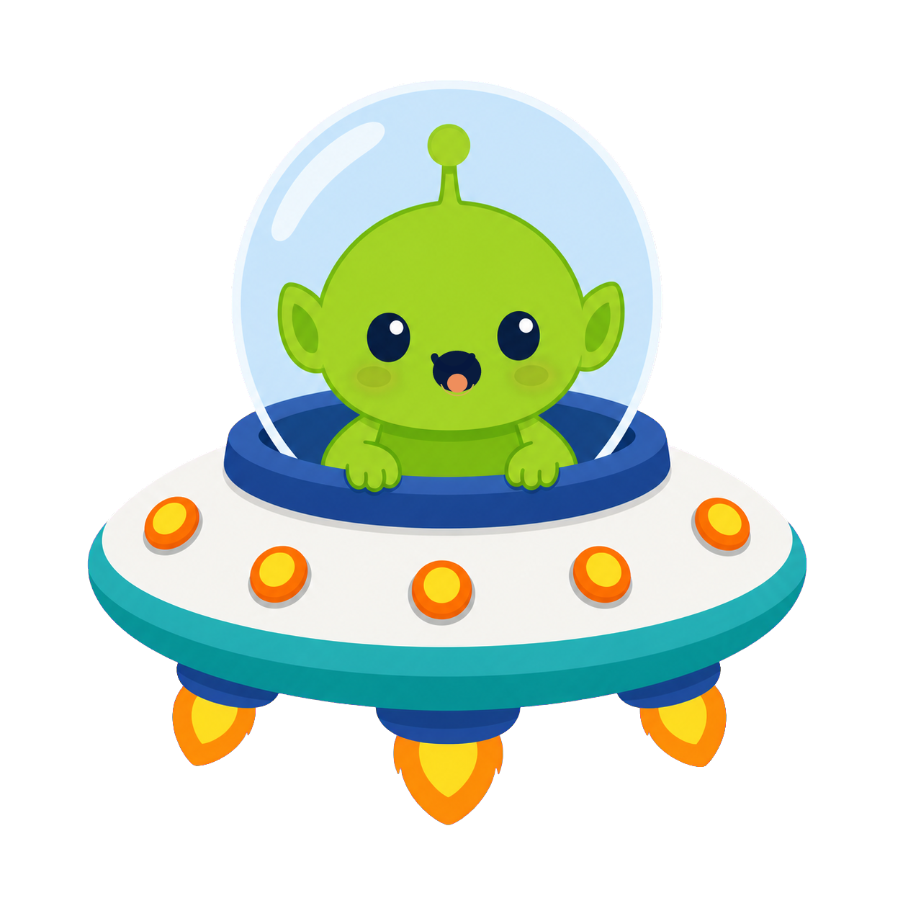

기본 상태와 표정 상태를 자연스럽게 전환
두 PNG를 같은 좌표에 겹쳐 두고 opacity만 전환한다. idle bob은 wrapper transform으로만 처리해서 캐릭터 이미지 자체는 흔들리지 않는다.
- base
alien-ufo-base-state.png - expression
alien-ufo-expression-state.png


두 PNG를 같은 좌표에 겹쳐 두고 opacity만 전환한다. idle bob은 wrapper transform으로만 처리해서 캐릭터 이미지 자체는 흔들리지 않는다.
alien-ufo-base-state.pngalien-ufo-expression-state.png